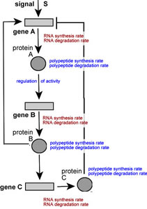

Network applet: input
- allow students to control network assembly; identify gene
products as RNA only or RNA/polypeptide
- allow students to manipulate RNA synthesis & degradation
rates
- polypeptide degradation rate
- timing of RNA / polypeptide synthesis based on length
- Stochastic regulation
|
|
 |